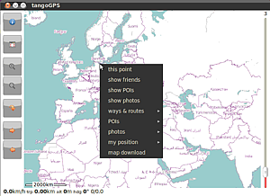

TangoGPS
Archivierte Anleitung
Dieser Artikel wurde archiviert, da er - oder Teile daraus - nur noch unter einer älteren Ubuntu-Version nutzbar ist. Diese Anleitung wird vom Wiki-Team weder auf Richtigkeit überprüft noch anderweitig gepflegt. Zusätzlich wurde der Artikel für weitere Änderungen gesperrt.
Zum Verständnis dieses Artikels sind folgende Seiten hilfreich:
TangoGPS ist ein einfach zu nutzendes Programm zum Arbeiten mit Karten - mit oder ohne GPS. Hat man einen GPS-Empfänger angeschlossen, wird die aktuelle Position und die Spur ("Track") auf einer Karte angezeigt. Es soll auf allen Geräten, die Linux nutzen, laufen: vom PC über Notebook bis zum Openmoko. Interessante Möglichkeiten sind das Zuordnen von Photos zu Geokoordinaten ("geocoding") oder Hochladen von Straßen nach OpenStreetMap.
Ab Ubuntu 11.04 sollte der Nachfolger FoxtrotGPS genutzt werden. Wer hier noch das Paket tangogps installiert, erhält dieses Programm automatisch.
Installation¶
TangoGPS kann bis Ubuntu 10.10 direkt aus den Paketquellen installiert [1] werden:
tangogps (universe)
 mit apturl
mit apturl
Paketliste zum Kopieren:
sudo apt-get install tangogps
sudo aptitude install tangogps
Für das "Geocoding" müssen zusätzlich installiert werden:
gpscorrelate
gpscorrelate-gui (universe)
mit apturl
Paketliste zum Kopieren:
sudo apt-get install gpscorrelate gpscorrelate-gui
sudo aptitude install gpscorrelate gpscorrelate-gui
Anschließend ist es im Anwendungs-Menü unter "Zubehör -> TangoGPS" zu finden.
Benutzung¶

Im Hauptfenster finden sich links folgende Schaltflächen:
I (Show Info) (s. unten)
Mit der zweiten Schaltfläche kann man zwischen normaler Ansicht und Vollbild umschalten
+ steht für größer zoomen
- für kleiner zoomen
der gebogene Pfeil ermöglicht, die Autozentrierfunktion abzuschalten.
← → erlaubt, die aktuelle Position sich auf allen verfügbaren Karten nacheinander anzeigen zu lassen.
Klickt man auf das "i" (Show Info), kann man im rechts erscheinenden Fenster blättern zwischen folgenden vier Seiten:
"Trip Meter" zum Protokollieren der eigenen Bewegungen
"Friends" zum Mitteilen seiner Position an auszuwählende Freunde
"Tracks" zum Aufzeichnen bzw Einladen von GPS-Spuren (Tracks)
"Configuraton" zum Auswählen der bevorzugten Karte. Zur Verfügung stehen "OpenStreetMap", "Maps-for-free", "OpenCypleMap" und zum Testen "Google Maps" und "Google Sat".
Mit  Rechtsklick auf das Kartenfeld öffnet sich folgendes Menü:
Rechtsklick auf das Kartenfeld öffnet sich folgendes Menü:
| Kartenfeld-Menü | |
| Eintrag | Funktion |
| this point | |
| show friends | Anzeigen der Position von Freunden |
| show POIs | Zum Anzeigen eingetragener Punkte von Interesse, z.B. Übernachtungsmöglichkeiten, Restaurants, Sehenswürdigkeiten |
| show Photos | Zum Anzeigen von Bildern, die Geokoordinaten tragen |
| ways & routes | |
| * get route | Zum Einladen einer Route, z.B. gpx-Datei |
| * set WP | Zum Setzen eines Wegpunktes |
| * unset WP | Zum Entfernen eines Wegpunktes |
| POIs | Punkte von Interesse |
| * add | Zum Hinzufügen eines Punktes |
| * select | Zur Anwahl eines Punktes |
| Photos | |
| * geocode | Geokoordinaten Photos zuordnen |
| My position | Die eigene Geoposition |
| * set | festlegen |
| * unset | entfernen |
| Map download | eine Karte einladen |
Geokoordinaten und Photos¶
Nach Anwahl des Kontextmenüpunktes "Photos -> geocode" zeigt sich ein separates Fenster "geocoding your photos". Man öffnet einen GPS-Track, lädt seine Photos dazu ein und - ganz wichtig! - kann die genaue Zeit korrigieren, damit Spur (Track) und Bild wirklich zusammen passen. Anschließend werden die Photos intern gespeichert. Mit "Show Photos" werden die Bilder dann räumlich in der Karte angezeigt.
Links¶
ehemalige Projektseite
 - nicht mehr erreichbar
- nicht mehr erreichbarWie funktioniert GPS? Alles Wissenswerte
 - mehr zum Thema GPS
- mehr zum Thema GPS
- Erstellt mit Inyoka
-
 2004 – 2017 ubuntuusers.de • Einige Rechte vorbehalten
2004 – 2017 ubuntuusers.de • Einige Rechte vorbehalten
Lizenz • Kontakt • Datenschutz • Impressum • Serverstatus -
Serverhousing gespendet von